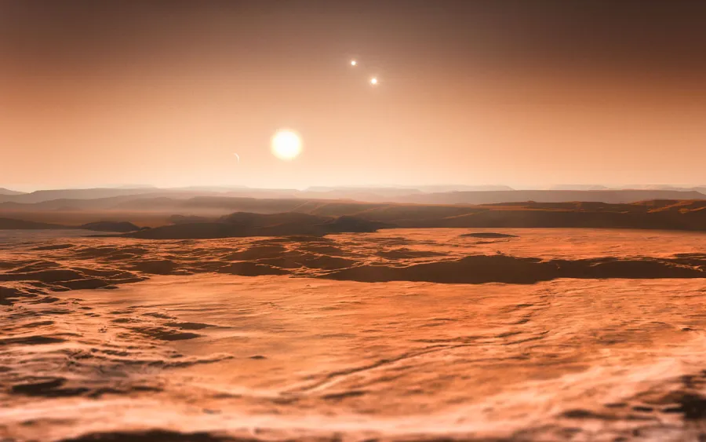

25. Juni 2013
Gliese 667C: drei Supererden in der habitablen Zone
Eine Neuauswertung von HARPS-Daten der ESO zusammen mit weiteren Messungen ergab beim Stern Gliese 667C Hinweise auf bis zu sieben Planeten. Drei davon sind Supererden in der habitablen Zone, in der flüssiges Wasser möglich wäre – so viele waren zuvor in keinem System bekannt. Fünf der Signale gelten als sehr sicher, das sechste und siebte als vorläufig.
Gliese 667C hat gut ein Drittel der Sonnenmasse und gehört zu einem Dreifachsternsystem, das 22 Lichtjahre entfernt im Sternbild Skorpion liegt. Die Planeten wurden über Radialgeschwindigkeitsmessungen gefunden.
Quellen: ESO: "Three Planets in Habitable Zone of Nearby Star." (eso1328), 25.06.2013; arXiv: Anglada-Escudé et al., "A dynamically-packed planetary system around GJ667C with three super-Earths in its habitable zone.", 25.06.2013